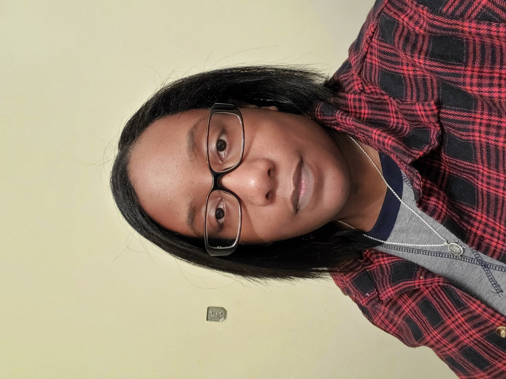

About Me
Hi, my name is Kaija. I care about the whole process, from the first idea to testing, and I'm always eager to learn new tools and expand my skill set.
One game idea gave me the final push to learn how to make games. It's still rough, a little too complex, and in the beginning stages, but the more experience I gain, the closer I get to building it.
I keep a running list of game ideas, concepts, and platforms I want to try. Sometimes I pair ideas from the list together, and sometimes scrolling through it sparks something completely different. Once I've picked an idea, I write up a full game design document (GDD), then start on either art or code. When I start with code, I use placeholder shapes to test what works and swap in final art later. I usually bounce between the two, saving audio and particle effects for last. I keep revising the GDD as I go, cutting what doesn't work and adding what makes the game better.
Making games has taught me that less is often more, and that far more work goes into a game than it appears. It has given me a deeper appreciation for the games I play, and I now analyze them to figure out what makes certain parts work well or fall flat.
Honestly, I enjoy making games more than playing them. It lets me be creative and bring ideas to life. Games take a long time to build, but I find the process fun, and I try to finish every game I start, even when I'm tired of it halfway through. Every finished project adds to my practice and makes me a better developer.
